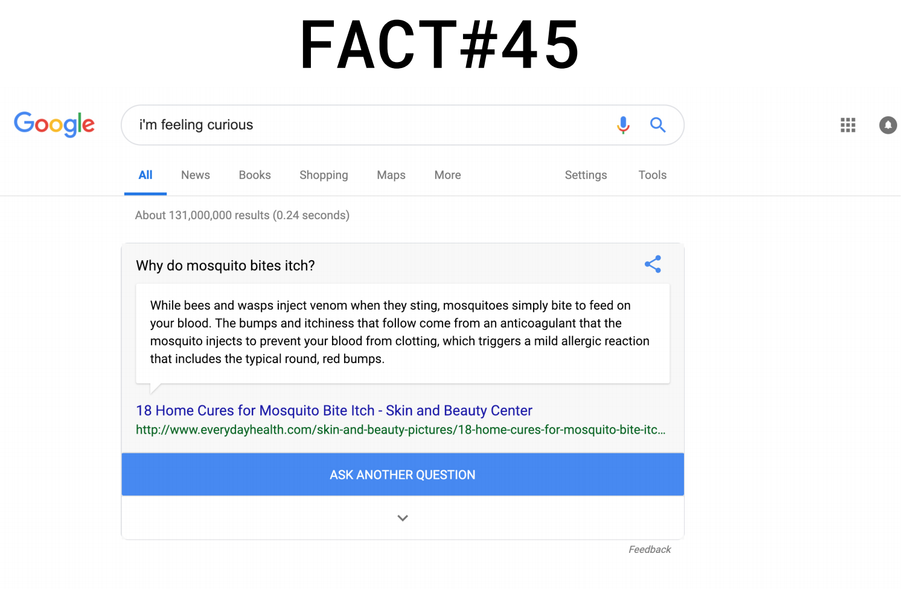
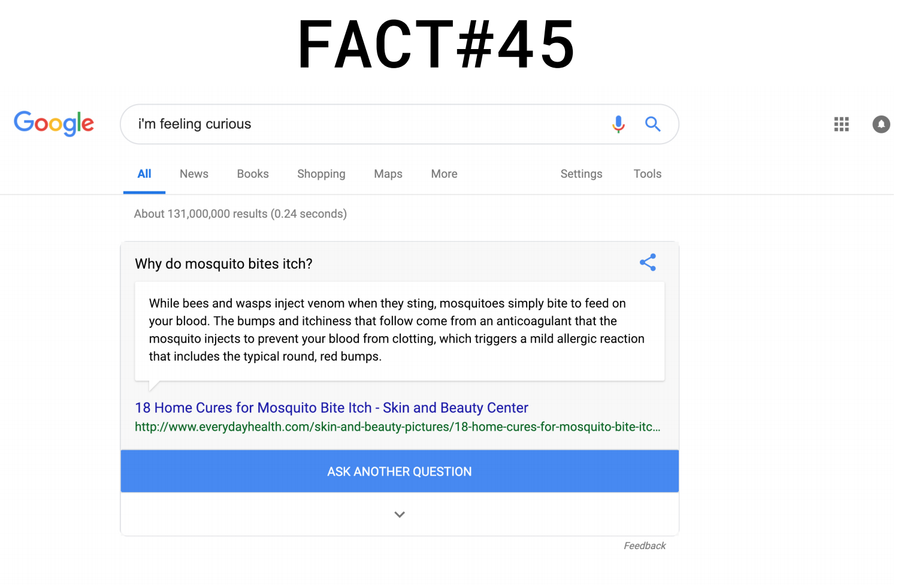

Everyday, we encounter hundreds (if not thousands) of disparate pieces of information in the form of facts. They can spark curiosity, joy, or shock; provide us with knowledge; reinforce our existing opinions; persuade us to change our thoughts and behavior; or provoke us to reconsider our previous assumptions, and lead us to new meanings.
From the Google “I’m feeling curious” algorithm, I researched about why mosquito bites itch.

 
